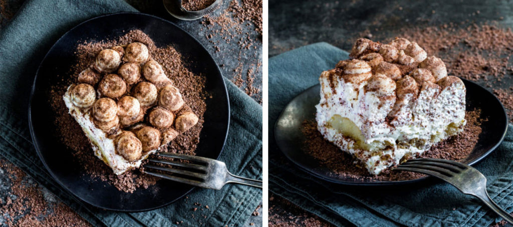

Tiramisu Cheesecake
source: americanheritagechocolate.com

Description
Tiramisu cheesecake is a delightful dessert that combines
the flavors of two classic Italian treats: tiramisu and cheesecake.
This dessert typically features a creamy and rich cheesecake filling with
the addition of coffee-soaked ladyfinger cookies and a dusting of cocoa powder.
It captures the essence of tiramisu's coffee and mascarpone flavors while maintaining
the creamy texture of traditional cheesecake, making it a popular and indulgent dessert choice
for those who enjoy the combination of coffee and sweet, creamy desserts.
INGREDIENTS

Cheesecake Filling
- 40–45 Ladyfingers
- 2 cups prepared espresso (instant expresso granules + hot water), cooled
- 2 tablespoons vanilla extract (recipe swap for 3 tablespoons Kahlua)
- 2 tubs (1 lb. 8.3 oz each) no-bake cheesecake filling (in the refrigerated section by the cream cheese)
- 2 tablespoons AMERICAN HERITAGE®
Mascarpone Topping
- 1 cup Mascarpone cheese
- 1 cup heavy cream (whipping cream)
- 1/4 cup granulated sugar
- 2 teaspoons vanilla extract (recipe swap for 1 tablespoon Kahlua)
PREPARATION
Step 1:
Cheesecake Filling: Prepare the espresso. Allow it to cool. Stir in vanilla. One by one,
quickly dip 20 of the ladyfingers in and out of the coffee. Line the bottom of an 8×8 baking dish with the espresso-soaked ladyfingers.
Step 2:
With a spatula, spread one tub of no-bake cheesecake filling over the ladyfingers in a smooth even layer. Sprinkle 1 tablespoon chocolate over the surface.
Step 3:
Repeat with a second layer of 20 ladyfingers and the second tub of cheesecake filling.
Step 4:
Sprinkle 1 tablespoon chocolate over the top. Refrigerate the tiramisu while you make the mascarpone topping.
Step 5:
Mascarpone Topping: Remove mixing bowl and whisk from the freezer. Add mascarpone cheese, heavy cream,
sugar, and vanilla to the bowl. Attach bowl and whip to your stand mixer.
Step 4:
Mix the ingredients on medium speed until firm peaks form and the mixture can hold its shape (about 5 minutes).
Step 4:
Transfer the mixture to a piping bag fitted with a Wilton 1A tip. Remove tiramisu from the fridge. Holding the piping bag straight up and down, pipe quarter-size
circles of topping over the surface of the cheesecake. The peaks should be very close together. Refrigerate uncovered for 4 hours or overnight.
Step 4:
Just before serving, generously dust the top with chocolate.
Research
allrecipes.com
This site has clear and detailed explanation of each step, even indludes methods to store the food as well as nutrition factors. The message is conveyed in an efficient way.
However, the "how to store" section comes before the actual steps, which means people who only want to see the instructions need to spend long time scrolling down the screen.
Also, I think the website is not visually pleasing enough.
foodnetwork.com
Tis website has chosen to put ingredients and instructions next to each other which I think is successful. There is also a review section for people to interact.
However, there is no pictures on each step and other useful information.
jamieoliver.com
Good thing about this is that the recipes are grouped into different genre. The instruction page also provides personal tips. The webpage is relatively more visually
pleasing than the previous two websites by using colors.
zara.com
The webpage start with captivating picture with limited functionalities that takes up the entire screen. This would leave a lastlasting impression on the viewers. More
dynamic elements are involved in this web design and the functioning buttons are using simple lines which gives the weboage a simplistic vibe.
fontawesome.com
The website utilizes buttons and blocks of colors very well so that the home page is both visually pleasing and increase the effiency of message communication. The users
can directly scan and select whet they need in their website. The webpage gives out a warm and joyful vibe.
nationalgeographic.com
The website has spent much effort in displaying photographs, including making use of the backgorund, animation, and various structures. The text display in each article
is also visually pleasing and at the same maintain high legibility.